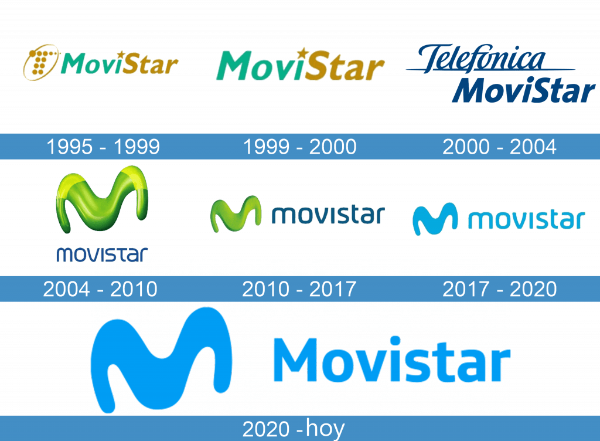

Todo comienza en 1993, cuándo Telefónica, la multinacional española, lanza MoviLine. Este era un servicio de telefonía móvil analógica. Sin embargo, pensando aún más allá, la empresa también se agendó el nombre MoviStar, un nombre que utilizaría años más tarde con la llegada de la telefonía móvil digital.
Un dato interesante es que en esa época Telefónica tenía una especie de regla con respecto a los nombres: buscaba que sonaran lo más tecnológico y anglosajón posible. A su vez, la estructura siempre era de dos partes al estilo camelcase, con una mayúscula entre medio.
En cualquier caso, MoviStar recién vería la luz en el verano de 1995. Esto fue una novedad para todos, ya que era un servicio que funcionaba en toda Europa, mientras que su parte MoviLine solo tenía presencia en España.
El primer logo de MoviStar consistía en el nombre de la marca en una fuente sans serif de color turquesa y oro. Estaba dividido en dos partes, con las palabras “M” y “S” en mayúscula. A su costado se podía apreciar un símbolo con forma de T (representando a telefónica) hecho con círculos de distintos tamaños. Este último evocaba una sensación de avance tecnológico, casi satelital, haciendo alusión al mensaje que buscaba transmitir la empresa. Un último toque sútil, es el uso de una estrella dorada en la “I” turquesa.
En 1999 el logo sufriría un pequeño cambio, eliminando la T y dándole más presencia al nombre de la marca.
A comienzos del milenio el logo sufriría un cambio radical con la llegada del nuevo nombre de la empresa, que pasaría a ser “Telefónica Movistar”. De esta manera, el logo pasaría a tener dos niveles. La palabra “telefónica” se vería subrayada con un color amarillo-verde y una fuente parecida a escritura a mano. Debajo estaba el “movistar” en blanco en una fuente Gill Sans MT. Ambas partes están sobre un fondo azul oscuro.
Brindar a través de nuestros productos y servicios en el sector de las telecomunicaciones la optima satisfacción a nuestros distribuidores y clientes.
Sustentados por una empresa económicamente próspera comprometida con el desarrollo de su personal y de la sociedad donde se ubica.
La misión de Movistar es satisfacer a sus distribuidores y clientes con productos y servicios de alta calidad , además de los mejores resultados en ventas.
Situarnos como altos líderes en el mercado de telecomunicaciones, a través de nuestro producto, servicio, calidad e innovación.
Siempre guiados por una actitud ética y honesta.
La empresa aspira a un futuro en el que esté posicionada en el top de las mejores compañías de telecomunicaciones a nivel mundial, con los mejores productos y servicios, que reflejen innovación, calidad y sentido de pertenencia.
Confiabilidad: Le damos a nuestros proveedores y clientes la certeza de ser una compañía que brinda el mejor servicio y la mayor calidad en productos.
Honestidad y honradez: Nuestras acciones reflejan sinceridad en todo momento, esta transparencia la evidencian compañeros, líderes, proveedores y clientes por igual.
Lealtad:Nos sentimos identificados con los objetivos de la empresa y al mismo tiempo, procuramos que exista una lealtad recíproca hacia nuestros proveedores y clientes.